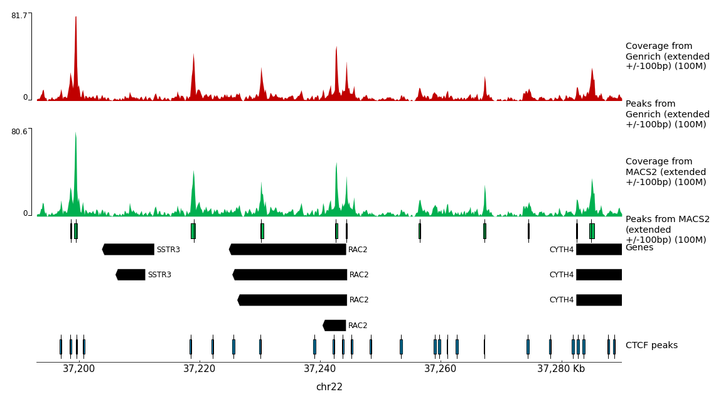

In many eukaryotic organisms, such as humans, the genome is tightly packed and organized with the help of nucleosomes (chromatin). A nucleosome is a complex formed by eight histone proteins that is wrapped with ~147bp of DNA. When the DNA is being actively transcribed into RNA, the DNA will be opened and loosened from the nucleosome complex. Many factors, such as the chromatin structure, the position of the nucleosomes, and histone modifications, play an important role in the organization and accessibility of the DNA. Consequently, these factors are also important for the activation and inactivation of genes. Assay for Transposase-Accessible Chromatin using sequencing (ATAC-Seq) is a method to investigate the accessibility of chromatin and thus a method to determine regulatory mechanisms of gene expression. The method can help identify promoter regions and potential enhancers and silencers. A promoter is the DNA region close to the transcription start site (TSS). It contains binding sites for transcription factors that will recruit the RNA polymerase. An enhancer is a DNA region that can be located up to 1 Mb downstream or upstream of the promoter. When transcription factors bind an enhancer and contact a promoter region, the transcription of the gene is increased. In contrast, a silencer decreases or inhibits the gene’s expression. ATAC-Seq has become popular for identifying accessible regions of the genome as it’s easier, faster and requires less cells than alternative techniques, such as FAIRE-Seq and DNase-Seq.
Figure 1: Buenrostro et al. 2013 Nat Methods
With ATAC-Seq, to find accessible (open) chromatin regions, the genome is treated with a hyperactive derivative of the Tn5 transposase. A transposase can bind to a transposable element, which is a DNA sequence that can change its position (jump) within a genome (read the two links to get a deeper insight). During ATAC-Seq, the modified Tn5 inserts DNA sequences corresponding to truncated Nextera adapters into open regions of the genome and concurrently, the DNA is sheared by the transposase activity. The read library is then prepared for sequencing, including PCR amplification with full Nextera adapters and purification steps. Paired-end reads are recommended for ATAC-Seq for the reasons described here.
In this tutorial we will use data from the study of Buenrostro et al. 2013, the first paper on the ATAC-Seq method. The data is from a human cell line of purified CD4+ T cells, called GM12878. The original dataset had 2 x 200 million reads and would be too big to process in a training session, so we downsampled the original dataset to 200,000 randomly selected reads. We also added about 200,000 reads pairs that will map to chromosome 22 to have a good profile on this chromosome, similar to what you might get with a typical ATAC-Seq sample (2 x 20 million reads in original FASTQ). Furthermore, we want to compare the predicted open chromatin regions to the known binding sites of CTCF, a DNA-binding protein implicated in 3D structure: CTCF. CTCF is known to bind to thousands of sites in the genome and thus it can be used as a positive control for assessing if the ATAC-Seq experiment is good quality. Good ATAC-Seq data would have accessible regions both within and outside of TSS, for example, at some CTCF binding sites. For that reason, we will download binding sites of CTCF identified by ChIP in the same cell line from ENCODE (ENCSR000AKB, dataset ENCFF933NTR).
When working with real data
When you use your own data we suggest you to use this workflow which includes the same steps but is compatible with replicates. If you do not have any control data you can import and edit this workflow, removing all steps with the controls. Controls for the ATAC-Seq procedure are not commonly performed, as discussed here, but could be ATAC-Seq of purified DNA.
Your results may be slightly different from the ones presented in this tutorial
due to differing versions of tools, reference data, external databases, or
because of stochastic processes in the algorithms.
Preprocessing
Get Data
We first need to download the sequenced reads (FASTQs) as well as other annotation files. Then, to increase the number of reads that will map to the reference genome (here human genome version 38, GRCh38/hg38), we need to preprocess the reads.
hands_on Hands-on: Data upload
Create a new history for this tutorial
tip Tip: Creating a new history
Click the new-history icon at the top of the history panel
If the new-history is missing:
Click on the galaxy-gear icon (History options) on the top of the history panel
Select the option Create New from the menu
Import the files from Zenodo or from the shared data library
Open the Galaxy Upload Manager (galaxy-upload on the top-right of the tool panel)
Select Paste/Fetch Data
Paste the link into the text field
Press Start
Close the window
By default, Galaxy uses the URL as the name, so rename the files with a more useful name.
tip Tip: Importing data from a data library
As an alternative to uploading the data from a URL or your computer, the files may also have been made available from a shared data library:
Go into Shared data (top panel) then Data libraries
Find the correct folder (ask your instructor)
Select the desired files
Click on the To History button near the top and select as Datasets from the dropdown menu
In the pop-up window, select the history you want to import the files to (or create a new one)
Click on Import
Add a tag called #SRR891268_R1 to the R1 file and a tag called #SRR891268_R2 to the R2 file.
tip Tip: Adding a tag
Click on the dataset
Click on galaxy-tagsEdit dataset tags
Add a tag starting with #
Tags starting with # will be automatically propagated to the outputs of tools using this dataset.
Check that the tag is appearing below the dataset name
Check that the datatype of the 2 FASTQ files is fastqsanger.gz and the peak file (ENCFF933NTR.bed.gz) is encodepeak. If they are not then change the datatype as described below.
tip Tip: Changing the datatype
Click on the galaxy-pencilpencil icon for the dataset to edit its attributes
In the central panel, click on the galaxy-chart-select-dataDatatypes tab on the top
If you are not familiar with BED format or encode narrowPeak format, see the BED Format
We will visualise regions later in the analysis and obtain the gene information now. We will get information for chromosome 22 genes (names of transcripts and genomic positions) using the UCSC tool.
hands_on Hands-on: Obtain Annotation for hg38 genes
UCSC Maintool with the following parameters:
“clade”: Mammal
“genome”: Human
“assembly”: Dec. 2013 (GRCh38/hg38)
“group”: Genes and Gene Prediction
“track”: All GENCODE V31
“table”: Basic
“region”: positionchr22
“output format”: all fields from selected table
“Send output to”: Galaxy
Click get output
Click Send query to Galaxy
This table contains all the information but is not in a BED format. To transform it into BED format we will cut out the required columns and rearrange:
Cut columns from a table tool with the following parameters:
param-text“Cut columns”: c3,c5,c6,c13,c12,c4
param-text“Delimited by”: Tab
param-file“From”: UCSC Main on Human: wgEncodeGencodeBasicV31 (chr22:1-50,818,468)
Check the contents of your file, is this as you expect it to be?
question Question: Expected output
Our goal here was to convert the data to BED format.
Which columns do you expect in your file? (Tip: read about BED format)
Does your file look like a valid BED format?
solution Solution
We expect at least 3 columns, chromosome - start - end, and possibly more optional columns
Troubleshooting: Is your second column the Strand column?
Make sure you used the correct Cuttool (the one that matches the tool name mentioned in the previous step exactly)
There is another tool with (cut) behind the title, we do NOT want to use this tool in this step.
Tip: Always check your output files to make sure they match your expectations!
Renamegalaxy-pencil the dataset as chr22 genes
tip Tip: Renaming a dataset
Click on the galaxy-pencilpencil icon for the dataset to edit its attributes
In the central panel, change the Name field
Click the Save button
Changegalaxy-pencil its datatype to BED
tip Tip: Changing the datatype
Click on the galaxy-pencilpencil icon for the dataset to edit its attributes
In the central panel, click on the galaxy-chart-select-dataDatatypes tab on the top
Select bed
Click the Change datatype button
comment Gene file
The chr22 genes BED we produced only contains the start, the end, the name, and the strand of each transcript. It does not contain exon information.
To be able to have the exon information, you could use a GTF file which can be downloaded from the gencode website but this file would include the information for the whole genome and would slow the analysis.
Quality Control
The first step is to check the quality of the reads and the presence of the Nextera adapters. When we perform ATAC-Seq, we can get DNA fragments of about 40 bp if two adjacent Tn5 transposases cut the DNAAdey et al. 2010. This can be smaller than the sequencing length so we expect to have Nextera adapters at the end of those reads. We can assess the reads with FastQC.
hands_on Hands-on: Task description
FastQCtool with the default parameters:
“Short read data from your current history”: Choose here either only the SRR891268_R1 file with param-file or use param-filesMultiple datasets to choose both SRR891268_R1 and SRR891268_R2.
Inspect the web page output of FastQCtool for the SRR891268_R1 sample. Check what adapters are found at the end of the reads.
question Questions
How many reads are in the FASTQ?
Which sections have a warning?
solution Solution
There are 285247 reads.
The 3 steps below have warnings:
Per base sequence content
It is well known that the Tn5 has a strong sequence bias at the insertion site. You can read more about it in Green et al. 2012.
Sequence Duplication Levels
The read library quite often has PCR duplicates that are introduced
simply by the PCR itself. We will remove these duplicates later on.
Overrepresented sequences
One sequence is over represented:
you have 306 reads which are exactly the sequence of the Nextera adapter.
They correspond to adapters amplified head-to-head.
306 is really low (only 0.1% of reads).
comment FastQC Results
This is what you should expect from the Adapter Content section:
Figure 2: FastQC screenshot on the Adapter Content section
The FastQC web page Adapter Content section shows the presence of Nextera Transposase Sequence in the reads. We will remove the adapters with Cutadapt.
Trimming Reads
To trim the adapters we provide the Nextera adapter sequences to Cutadapt. These adapters are shown in the image below.
Figure 3: Nextera library with the sequence of adapters
The forward and reverse adapters are slightly different. We will also trim low quality bases at the ends of the reads (quality less than 20). We will only keep reads that are at least 20 bases long. We remove short reads (< 20bp) as they are not useful, they will either be thrown out by the mapping or may interfere with our results at the end.
Click on the galaxy-eye (eye) icon of the report and read the first lines.
comment Cutadapt Results
You should get similar output to this from Cutadapt:
Figure 4: Summary of cutadapt
question Questions
What percentage of reads contain adapters?
What percentage of reads are still longer than 20bp after the trimming?
solution Solution
~14%
~99%
hands_on Hands-on: Check Adapter Removal with FastQC
FastQCtool with the default parameters:
“Short read data from your current history”: select the output of Cutadaptparam-filesMultiple datasets to choose both Read 1 Output and Read 2 Output.
Click on the galaxy-eye (eye) icon of the report and read the first lines.
comment FastQC Results
If we run FastQC again we should see under Overrepresented sequences that there is no more overrepresented sequences and under Adapter Content that the Nextera adapters are no longer present.
Figure 5: FastQC screenshot on the adapter content section after cutadapt
Mapping
MappingReads to Reference Genome
Next we map the trimmed reads to the human reference genome. Here we will use Bowtie2. We will extend the maximum fragment length (distance between read pairs) from 500 to 1000 because we know some valid read pairs are from this fragment length. We will use the --very-sensitive parameter to have more chance to get the best match even if it takes a bit longer to run. We will run the end-to-end mode because we trimmed the adapters so we expect the whole read to map, no clipping of ends is needed. Regarding the genome to choose. The hg38 version of the human genome contains alternate loci. This means that some region of the genome are present both in the canonical chromosome and on its alternate loci. The reads that map to these regions would map twice. To be able to filter reads falling into repetitive regions but keep reads falling into regions present in alternate loci, we will map on the Canonical version of hg38 (only the chromosome with numbers, chrX, chrY, and chrM).
comment Dovetailing
We will allow dovetailing of read pairs with Bowtie2. This is because adapters are removed by Cutadapt only when at least 3 bases match the adapter sequence, so it is possible that after trimming a read can contain 1-2 bases of adapter and go beyond it’s mate start site. For example, if the first mate in the read pair is: GCTATGAAGAATAGGGCGAAGGGGCCTGCGGCGTATTCGATGTTGAAGCT and the second mate is CTTCAACATCGAATACGCCGCAGGCCCCTTCGCCCTATTCTTCATAGCCT, where both contain 2 bases of adapter sequence, they will not be trimmed by Cutadapt and will map this way:
This is what we call dovetailing and we want to consider this pair as a valid concordant alignment.
hands_on Hands-on: Mappingreads to reference genome
Bowtie2tool with the following parameters:
“Is this single or paired library”: Paired-end
param-file“FASTQ/A file #1”: select the output of Cutadapttool“Read 1 Output”
param-file“FASTQ/A file #2”: select the output of Cutadapttool“Read 2 Output”
“Do you want to set paired-end options?”: Yes
“Set the maximum fragment length for valid paired-end alignments”: 1000
“Allow mate dovetailing”: Yes
“Will you select a reference genome from your history or use a built-in index?”: Use a built-in genome index
“Select reference genome”: Human (Homo sapiens): hg38 Canonical
“Select analysis mode”: 1: Default setting only
“Do you want to use presets?”: Very sensitive end-to-end (--very-sensitive)
“Save the bowtie2 mapping statistics to the history”: Yes
Click on the galaxy-eye (eye) icon of the mapping stats.
comment Bowtie2 Results
You should get similar results to this from Bowtie2:
Figure 6:Mapping statistics of bowtie2
question Questions
What percentage of read pairs mapped concordantly?
solution Solution
54.8+42.87=97.67%
comment Comment on the number of uniquely mapped.
You might be surprised by the number of uniquely mapped compared to the number of multi-mapped reads (readsmapping to more than one location in the genome).
One of the reasons is that we have used the parameter --very-sensitive. Bowtie2 considers a read as multi-mapped even if the second hit has a much lower quality than the first one.
Another reason is that we have reads that map to the mitochondrial genome. The mitochondrial genome has a lot of regions with similar sequence.
Filtering Mapped Reads
Filter Uninformative Reads
We apply some filters to the reads after the mapping. ATAC-Seq datasets can have a lot of reads that map to the mitchondrial genome because it is nucleosome-free and thus very accessible to Tn5 insertion. The mitchondrial genome is uninteresting for ATAC-Seq so we remove these reads. We also remove reads with low mapping quality and reads that are not properly paired.
hands_on Hands-on: Filtering of uninformative reads
Filter BAM datasets on a variety of attributes tool with the following parameters:
param-file“BAM dataset(s) to filter”: Select the output of Bowtie2tool“alignments”
In “Condition”:
“1: Condition”
In “Filter”:
“1: Filter”
“Select BAM property to filter on”: mapQuality
“Filter on read mapping quality (phred scale)”: >=30
param-repeat“Insert Filter”
“Select BAM property to filter on”: isProperPair
“Select properly paired reads”: Yes
param-repeat“Insert Filter”
“Select BAM property to filter on”: reference
“Filter on the reference name for the read”: !chrM
“Would you like to set rules?”: No
Click on the input and the output BAM files of the filtering step. Check the size of the files.
question Questions
Based on the file size, what proportion of alignments was removed (approximately)?
Which parameter should be modified if you are interested in repetitive regions?
solution Solution
The original BAM file is 28 MB, the filtered one is 15.1 MB. Approximately half of the alignments were removed.
You should modify the mapQuality criteria and decrease the threshold.
High numbers of mitochondrial reads can be a problem in ATAC-Seq. Some ATAC-Seq samples have been reported to be 80% mitochondrial reads and so wet-lab methods have been developed to deal with this issue Corces et al. 2017 and Litzenburger et al. 2017. It can be a useful QC to assess the number of mitochondrial reads.
tip Tip: Getting the number of mitochondrial reads
To get the number of reads that mapped to the mitochondrial genome (chrM) you can run Samtools idxstatstool on the output of Bowtie2tool“alignments”.
The columns of the output are: chromosome name, chromosome length, number of readsmapping to the chromosome, number of unaligned mate whose mate is mapping to the chromosome.
The first 2 lines of the result would be (after using Sorttool):
Figure 7: Samtools idxstats result
There are 220 000 reads which map to chrM and 165 000 which map to chr22.
Filter Duplicate Reads
Because of the PCR amplification, there might be read duplicates (different readsmapping to exactly the same genomic region) from overamplification of some regions. As the Tn5 insertion is random within an accessible region, we do not expect to see fragments with the same coordinates. We consider such fragments to be PCR duplicates. We will remove them with Picard MarkDuplicates.
hands_on Hands-on: Remove duplicates
MarkDuplicatestool with the following parameters:
param-file“Select SAM/BAM dataset or dataset collection”: Select the output of Filtertool“BAM”
“If true do not write duplicates to the output file instead of writing them with appropriate flags set”: Yes
comment Comment: Default of MarkDuplicatestool
By default, the tool will only “Mark” the duplicates. This means that it will change the Flag of the duplicated reads to enable them to be filtered afterwards. We use the parameter “If true do not write duplicates to the output file instead of writing them with appropriate flags set” to directly remove the duplicates.
Click on the galaxy-eye (eye) icon of the MarkDuplicate metrics.
comment MarkDuplicates Results
You should get similar output to this from MarkDuplicates:
Figure 8: Metrics of MarkDuplicates
tip Tip: Formatting the MarkDuplicate metrics for readability
Select lines that match an expressiontool with the following parameters:
param-file“Select lines from”: Select the output of MarkDuplicatestool
“that: Matching
“the pattern: (Library|LIBRARY)
Check that the datatype is tabular. If not, change the datatype as described above.
Transposetool:
param-file“Select lines from”: Select the output of Selecttool
Figure 9: Metrics of MarkDuplicates
question Questions
How many pairs were in the input?
How many pairs are duplicates?
solution Solution
135813
3584
Check Insert Sizes
We will check the insert sizes with Picard CollectInsertSizeMetrics. The insert size is the distance between the R1 and R2 read pairs. This tells us the size of the DNA fragment the read pairs came from. The fragment length distribution of a sample gives a very good indication of the quality of the ATAC-Seq.
hands_on Hands-on: Plot the distribution of fragment sizes.
CollectInsertSizeMetricstool with the following parameters:
param-file“Select SAM/BAM dataset or dataset collection”: Select the output of MarkDuplicatestool“BAM output”
“Load reference genome from”: Local cache
“Using reference genome”: Human Dec. 2013 (GRCh38/hg38) (hg38)
Click on the galaxy-eye (eye) icon of the upper one of the 2 outputs (the pdf file).
comment CollectInsertSizeMetrics Results
This is what you get from CollectInsertSizeMetrics:
Figure 10: Fragment size distribution
question Questions
Could you guess what the peaks at approximately 50bp, 200bp, 400bp and 600bp correspond to?
solution Solution
The first peak (50bp) corresponds to where the Tn5 transposase inserted into nucleosome-free regions. The second peak (a bit less than 200bp) corresponds to where Tn5 inserted around a single nucleosome. The third one (around 400bp) is where Tn5 inserted around two adjacent nucleosomes and the fourth one (around 600bp) is where Tn5 inserted around three adjacent nucleosomes.
This fragment size distribution is a good indication if your experiment worked or not.
In absence of chromatin (without nucleosome), this is the profile you would get:
Figure 11: Fragment size distribution of a purified DNA
Here are examples of Fragment size distributions of ATAC-Seq which were very noisy:
Figure 12: Fragment size distribution of a failed ATAC-SeqFigure 13: Fragment size distribution of another very noisy ATAC-Seq
A final example of a Fragment size distribution of a very good ATAC-Seq, even if we cannot see the third nucleosome “peak”.
Figure 14: Fragment size distribution of a good ATAC-Seq
comment Comment on FR and RF
FR stands for forward reverse orientation of the read pairs, meaning, your reads are oriented as -> <- so the first read is on the forward and the second on the reverse strand. RF stands for reverse forward oriented, i.e., <- ->. It really depends on your experiment, how your reads are oriented and if the orientation plays a role.
Here, we expected FR and we got some RF for small reads. This is because when reads fully overlap:
------>
<------
Bowtie2 gives a negative fragment size (8th field of SAM files) thus the Picard tool CollectInsertSizeMetricstool attribute them to FR if the first read in the pair is forward and RF if the first read in the pair is reverse.
Peak calling
Call Peaks
We have now finished the data preprocessing. Next, in order to find regions corresponding to potential open chromatin regions, we want to identify regions where reads have piled up (peaks) greater than the background read coverage. The tools which are currently used are Genrich and MACS2. Genrich has a mode dedicated to ATAC-Seq but is still not published, so both are presented here. It is very important at this point that we center the reads on the 5’ extremity (read start site) as this is where Tn5 cuts. You want your peaks around the nucleosomes and not directly on the nucleosome:
Figure 15: Scheme of ATAC-Seq reads relative to nucleosomes
comment Comment on Tn5 insertion
When Tn5 cuts an accessible chromatin locus it inserts adapters separated by 9bp Kia et al. 2017:
Figure 16: Nextera Library Construction
This means that to have the read start site reflect the centre of where Tn5 bound, the reads on the positive strand should be shifted 4 bp to the right and reads on the negative strands should be shifted 5 bp to the left as in Buenrostro et al. 2013. Genrich can apply these shifts when ATAC-seq mode is selected.
If we only assess the coverage of the start sites of the reads, the data would be too sparse and it would be impossible to call peaks. Thus, we will extend the start sites of the reads by 100bp (50 bp in each direction) to assess coverage.
Using Genrich
comment Comment on Genrich filters
Using Genrich, you can do most of the filtering we did previously:
Remove PCR duplicates: Yes
Comma-separated list of chromosomes to exclude:
chrM
Minimum MAPQ to keep an alignment.
30
However, you cannot filter the unconcordant pairs, and you cannot get the fragment size histogram on filtered reads, that’s why in this training we performed all filtering step prior to the use of Genrich.
hands_on Hands-on: Identifying enriched genomic regions
Genrichtool with the following parameters:
“Are you pooling Treatment Files?”: No
param-file“Treatment File(s)”: Select the output of MarkDuplicatestool
“Do you have a Control File?”: No
“ATAC Options”:
“Use ATAC-seq mode.”: Yes
“Expand cut sites.”: 100
“Output Options”:
“Bedgraph-ish Pileups”: Yes
Using MACS2
We convert the BAM file to BED format because when we shift the reads with MACS2, it will only consider one of the read pairs.
hands_on Hands-on: Convert the BAM to BED
bedtools BAM to BED converter tool with the following parameters:
param-file“Convert the following BAM file to BED”: Select the output of MarkDuplicatestool
We call peaks with MACS2. Usually people expand 200bp around cut sites (+/-100bp). Here, to be able to compare with Genrich, we will use 100bp.
hands_on Hands-on: Call peaks with MACS2
MACS2 callpeaktool with the following parameters:
“Are you pooling Treatment Files?”: No
“Do you have a Control File?”: No
“Format of Input Files”: Single-end BED
“Effective genome size”: H. sapiens (2.7e9)
“Build Model”: Do not build the shifting model (--nomodel)
“Set extension size”: 100, people usually put 200
“Set shift size”: -50, people usually put -100. It needs to be - half the extension size to be centered on the 5’.
“Additional Outputs”:
Check Peaks as tabular file
Check Peak summits
Check Scores in bedGraph files
In “Advanced Options”:
“Composite broad regions”: No broad regions
“Use a more sophisticated signal processing approach to find subpeak summits in each enriched peak region”: Yes
“How many duplicate tags at the exact same location are allowed?”: all
comment Why keeping all duplicates is important
We previously removed duplicates using MarkDuplicatestool using paired-end information. If two pairs had identical R1 but different R2, we knew it was not a PCR duplicate. Because we converted the BAM to BED we lost the pair information. If we keep the default (removing duplicates) one of the 2 identical R1 would be filtered out as duplicate.
Add a tag called #MACS2_cov to the output called MACS2 callpeak …(Bedgraph Treatment).
Visualisation of Coverage
Prepare the Datasets
Thanks to Genrich we now have a coverage file which represents the coverage of the read start sites extended 50 bp to each side.
The output of Genrich is a BedGraph-ish pileup (6 columns text format with a comment line and a header). We will first need to convert it to a bedgraph format (4 columns text format with no header) to be able to visualise it.
Convert BedGraph-ish pileup of Genrich to bedgraph
First, we need to remove the 2 header lines. Then, we select the first 4 columns.
hands_on Hands-on: Convert bedgraph-ish pileup to bedgraph.
Remove beginning of a file tool with the following parameters:
“Remove first”: 2
param-file“from”: Select the output of Genrichtool“Bedgraph Pileups”.
Cut columns from a table tool with the following parameters:
param-text“Cut columns”: c1,c2,c3,c4
param-text“Delimited by”: Tab
param-file“From”: Select the output of Remove beginningtool
Chage the datatype from interval to bedgraph.
Add a tag called #Genrich_cov to the output of Cut.
Convert bedgraph from Genrich and MACS2 to bigwig
The bedgraph format is easily readable for human but it can be very large and visualising a specific region is quite slow. We will change it to bigwig format which is a binary format, so we can visualise any region of the genome very quickly.
hands_on Hands-on: Convert bedgraphs to bigWig.
Wig/BedGraph-to-bigWig converter tool with the following parameters:
param-files“Convert”: Select both the output of Cuttool and the output of MACS2tool (Bedgraph Treatment).
“Converter settings to use”: Default
Rename the datasets MACS2 bigwig and Genrich bigwig (you can use the tags to know which one is which one).
Sort CTCF Peaks
In order to visualise a specific region (e.g. the gene RAC2), we can either use a genome browser like IGV or UCSC browser, or use pyGenomeTracks to make publishable figures. We will use pyGenomeTracks. The pyGenomeTracks tool needs all BED files sorted, thus we sort the CTCF peaks.
hands_on Hands-on: Sort the BED files
bedtools SortBED order the intervals tool with the following parameters:
param-file“Sort the following BED/bedGraph/GFF/VCF file”: ENCFF933NTR.bed.gz
param-file“Sort by”: chromosome, then by start position (asc)
Create heatmap of coverage at TSS with deepTools
You might also be interested in specific regions. For this, you can compute a heatmap. We will use the deepTools plotHeatmap. As an example, we will here make a heatmap centered on the transcription start sites (TSS).
Generate computeMatrix
The input of plotHeatmap is a matrix in a hdf5 format. To generate it we use the tool computeMatrix that will evaluate the coverage at each locus we are interested in.
hands_on Hands-on: Generate the matrix
computeMatrixtool with the following parameters:
In “Select regions”:
“Select regions”
param-file“Regions to plot”: Select the dataset chr22 genes
“Sample order matters”: No
param-file“Score file”: Select the both outputs of Wig/BedGraph-to-bigWigtool that should be named MACS2 bigwig and Genrich bigwig.
“computeMatrix has two main output options”: reference-point
“The reference point for the plotting”: beginning of region (e.g. TSS)
“Show advanced output settings”: no
“Show advanced options”: yes
“Convert missing values to 0?”: yes
Plot with plotHeatmap
We will now generate a heatmap. Each line will be a transcript. The coverage will be summarized with a color code from red (no coverage) to blue (maximum coverage). All TSS will be aligned in the middle of the figure and only the 2 kb around the TSS will be displayed. Another plot, on top of the heatmap, will show the mean signal at the TSS. There will be one heatmap per bigwig.
hands_on Hands-on: Generate the heatmap
plotHeatmaptool with the following parameters:
param-file“Matrix file from the computeMatrix tool”: Select the output of computeMatrixtool.
“Show advanced output settings”: no
“Show advanced options”: no
comment plotHeatmap Results
This is what you get from plotHeatmap:
Figure 17: plotHeatmap output
question Questions
Is the coverage symmetric?
What is the mean value in genes?
solution Solution
No, it is higher on the left which is expected as usually the promoter of active genes is accessible.
Around 2.5 for Genrich and 3 for MACS2.
tip Tip: Why the height is different
MACS2 coverage is very simple, each 5’ is extended 100bp (+/-50bp).
Genrich coverage is evaluated in a more subtle way: if the fragment length is above 100 (the expension size), the coverage will be each 5’ extended 100bp (+/-50bp), but if it is less, the coverage will be between each 5’ extended 50bp (-50bp - fragment size - + 50bp):
Figure 18: MACS2 vs Genrich coverage
In this example, we see on the left a pair with a long fragment size: both algorithm behave the same.
On the left a pair with a short fragment size: Genrich reports only one interval joining both extremities wheareas MACS2 will still report 2 intervals even if they overlap.
Visualise Regions with pyGenomeTracks
hands_on Hands-on: Task description
pyGenomeTrackstool with the following parameters:
“Region of the genome to limit the operation”: chr22:37,193,000-37,252,000
In “Include tracks in your plot”:
“1. Include tracks in your plot”
“Choose style of the track”: Bigwig track
“Plot title”: Coverage from Genrich (extended +/-50bp)
param-file“Track file bigwig format”: Select the output of Wig/BedGraph-to-bigWigtool called Genrich bigwig.
“Color of track”: Select the color of your choice
“Minimum value”: 0
“height”: 5
“Show visualization of data range”: Yes
param-repeat“Insert Include tracks in your plot”
“Choose style of the track”: NarrowPeak track
“Plot title”: Peaks from Genrich (extended +/-50bp)
param-file“Track file bed format”: Select the output of Genrichtool.
“Color of track”: Select the color of your choice
“display to use”: box: Draw a box
“Plot labels (name, p-val, q-val)”: No
param-repeat“Insert Include tracks in your plot”
“Choose style of the track”: Bigwig track
“Plot title”: Coverage from MACS2 (extended +/-50bp)
param-file“Track file bigwig format”: Select the output of Wig/BedGraph-to-bigWigtool called MACS2 bigwig.
“Color of track”: Select the color of your choice
“Minimum value”: 0
“height”: 5
“Show visualization of data range”: Yes
param-repeat“Insert Include tracks in your plot”
“Choose style of the track”: NarrowPeak track
“Plot title”: Peaks from MACS2 (extended +/-50bp)
param-file“Track file bed format”: Select the output of MACS2tool (narrow Peaks).
“Color of track”: Select the color of your choice
“display to use”: box: Draw a box
“Plot labels (name, p-val, q-val)”: No
param-repeat“Insert Include tracks in your plot”
“Choose style of the track”: Gene track / Bed track
“Plot title”: Genes
param-file“Track file bed format”: chr22 genes
“Color of track”: Select the color of your choice
“height”: 5
“Put all labels inside the plotted region”: Yes
“Allow to put labels in the right margin”: Yes
param-repeat“Insert Include tracks in your plot”
“Choose style of the track”: NarrowPeak track
“Plot title”: CTCF peaks
param-file“Track file bed format”: Select the dataset bedtools SortBED of ENCFF933NTR.bed.gz
“Color of track”: Select the color of your choice
“display to use”: box: Draw a box
“Plot labels (name, p-val, q-val)”: No
param-repeat“Insert Include tracks in your plot”
“Choose style of the track”: X-axis
Click on the galaxy-eye (eye) icon of the output.
comment pyGenomeTracks Results
You should get similar to results to this from pyGenomeTracks:
Figure 19: pyGenomeTracks output
Unfortunately, Genrich does not work very well with our small training dataset (every covered region is called a peak). This is because most of the data is on chr22 whereas the background model was built on the whole genome. When the pipeline described here was run on 20 million of pairs from the original dataset, this is the output of pyGenomeTracks:
Figure 20: pyGenomeTracks output for 20 million of pairs on the whole genome
.
question Questions
In the ATAC-Seq sample in this selected region we see four peaks detected by Genrich and MACS2.
How many TSS are accessible in the sample in the displayed region?
How many CTCF binding loci are accessible?
Can you spot peaks with no TSS and no CTCF peak?
solution Solution
In total, we can see 3 TSS for 6 transcripts for 2 genes. The TSS of RAC2 corresponds to an ATAC-Seq peak whereas there is no significant coverage on both TSS of SSTR3.
Only the first peak on the left overlaps with a CTCF binding site.
Amongst the 4 peaks in this region, the 2 in the middle do not correspond to CTCF peaks or TSS.
We can see that in this region both peak calling perform the same. However, when zooming out, we see that MACS2 is more sensitive:
Figure 21: pyGenomeTracks output for 20 million of pairs on the whole genome zoom out
.
When the number of reads increases, the number of peaks with MACS2 increases but the number of peaks with Genrich decreases:
Figure 22: pyGenomeTracks output for 100 million of pairs on the whole genome zoom out
.
Figure 23: pyGenomeTracks output for 200 million of pairs on the whole genome zoom out
.
As CTCF binds so ubiquitously and by itself can displace the nucleosome creating accessible regions, a region containing a peak with no corresponding CTCF peak or TSS could be a putative enhancer. In the pyGenomeTracks plot we see a region like this located in the intron of a gene and another one between genes. However, it is impossible to guess from the position which would be the gene controlled by this region. And of course, more analyses are needed to assess if it is a real enhancer, for example, histone ChIP-seq, 3D structure, transgenic assay, etc.
Conclusion
In this training you have learned the general principles of ATAC-Seq data analysis. ATAC-Seq
is a method to investigate the chromatin accessibility and the genome is treated with
a transposase (enzyme) called Tn5. It marks open chromatin regions by cutting and
inserting adapters for sequencing. The training material gave you an insight into how to quality control the data. You should look for low quality bases, adapter contamination, correct insert size and PCR duplicates (duplication level). We showed you how to remove adapters and PCR duplicates, if FastQC, shows a warning in these areas. We mapped the reads
with Bowtie2, filtered our reads for properly paired, good quality and reads that do not
map to the mitochondrial genome. We found open chromatin regions with Genrich, a tool to find regions of genomic enrichment (peaks). We investigated the read coverage around TSS with the help of computeMatrix and plotHeatmap. Last but not least, we visualised the peaks and other informative tracks, such as CTCF binding regions and hg38 genes, with the help of pyGenomeTracks. At the end, we found open chromatin regions that did not overlap with CTCF sites or TSS, which could be potential putative enhancer regions detected by the ATAC-Seq experiment.
Figure 24: ATAC workflow
keypoints Key points
ATAC-Seq can be used to identify accessible gene promoters and enhancers
Several filters are applied to the reads, such as removing those mapped to mitochondria
Fragment distribution can help determine whether an ATAC-Seq experiment has worked well
References
Adey, A., H. G. Morrison, A. (no last name), X. Xun, J. O. Kitzman et al., 2010 Rapid, low-input, low-bias construction of shotgun fragment libraries by high-density in vitro transposition. Genome Biology 11: R119.10.1186/gb-2010-11-12-r119
Green, B., C. Bouchier, C. Fairhead, N. L. Craig, and B. P. Cormack, 2012 Insertion site preference of Mu, Tn5, and Tn7 transposons. Mobile DNA 3: 3.10.1186/1759-8753-3-3
Buenrostro, J. D., P. G. Giresi, L. C. Zaba, H. Y. Chang, and W. J. Greenleaf, 2013 Transposition of native chromatin for fast and sensitive epigenomic profiling of open chromatin, DNA-binding proteins and nucleosome position. Nature Methods 10: 1213–1218.10.1038/nmeth.2688
Litzenburger, U. M., J. D. Buenrostro, B. Wu, Y. Shen, N. C. Sheffield et al., 2017 Single-cell epigenomic variability reveals functional cancer heterogeneity. Genome Biology 18:10.1186/s13059-016-1133-7
Kia, A., C. Gloeckner, T. Osothprarop, N. Gormley, E. Bomati et al., 2017 Improved genome sequencing using an engineered transposase. BMC Biotechnology 17:10.1186/s12896-016-0326-1
Corces, M. R., A. E. Trevino, E. G. Hamilton, P. G. Greenside, N. A. Sinnott-Armstrong et al., 2017 An improved ATAC-seq protocol reduces background and enables interrogation of frozen tissues. Nature Methods 14: 959–962.10.1038/nmeth.4396
Feedback
Did you use this material as an instructor? Feel free to give us feedback on how it went.
Batut et al., 2018 Community-Driven Data Analysis Training for Biology Cell Systems 10.1016/j.cels.2018.05.012
details BibTeX
@misc{epigenetics-atac-seq,
author = "Lucille Delisle and Maria Doyle and Florian Heyl",
title = "ATAC-Seq data analysis (Galaxy Training Materials)",
year = "2021",
month = "01",
day = "06"
url = "\url{/training-material/topics/epigenetics/tutorials/atac-seq/tutorial.html}",
note = "[Online; accessed TODAY]"
}
@article{Batut_2018,
doi = {10.1016/j.cels.2018.05.012},
url = {https://doi.org/10.1016%2Fj.cels.2018.05.012},
year = 2018,
month = {jun},
publisher = {Elsevier {BV}},
volume = {6},
number = {6},
pages = {752--758.e1},
author = {B{\'{e}}r{\'{e}}nice Batut and Saskia Hiltemann and Andrea Bagnacani and Dannon Baker and Vivek Bhardwaj and Clemens Blank and Anthony Bretaudeau and Loraine Brillet-Gu{\'{e}}guen and Martin {\v{C}}ech and John Chilton and Dave Clements and Olivia Doppelt-Azeroual and Anika Erxleben and Mallory Ann Freeberg and Simon Gladman and Youri Hoogstrate and Hans-Rudolf Hotz and Torsten Houwaart and Pratik Jagtap and Delphine Larivi{\`{e}}re and Gildas Le Corguill{\'{e}} and Thomas Manke and Fabien Mareuil and Fidel Ram{\'{\i}}rez and Devon Ryan and Florian Christoph Sigloch and Nicola Soranzo and Joachim Wolff and Pavankumar Videm and Markus Wolfien and Aisanjiang Wubuli and Dilmurat Yusuf and James Taylor and Rolf Backofen and Anton Nekrutenko and Björn Grüning},
title = {Community-Driven Data Analysis Training for Biology},
journal = {Cell Systems}
}
congratulations Congratulations on successfully completing this tutorial!
 Lucille Delisle
Lucille Delisle Maria Doyle
Maria Doyle Florian Heyl
Florian Heyl